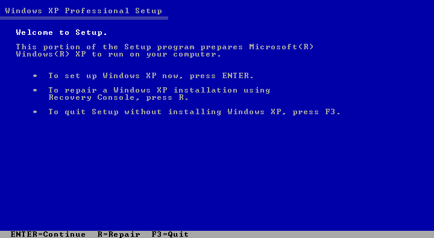
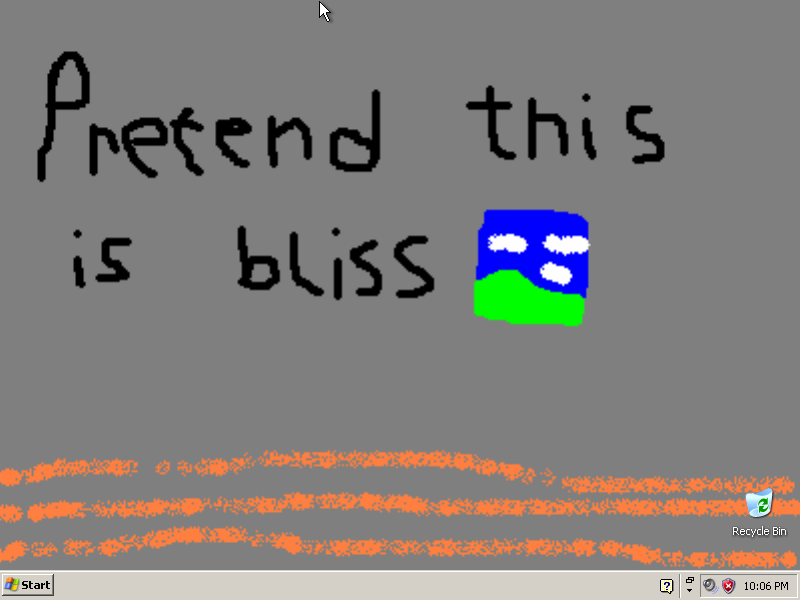
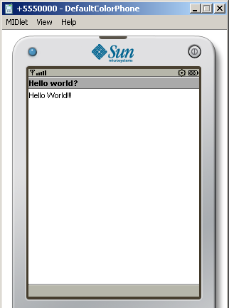

Below are the steps I took for installing the Sun WTK, on a Windows XP virtual machine.
The virtual machine part might not be needed, though I haven’t tried this yet.

Obviously, you’re going to need an installation CD. (you should get one by your own, but if you really want a link, “WinXPProSP3x86” on IA)
You will also have to set up a new VM. On VirtualBox:

Yipee! We need drivers, though…
Machine > Insert Guest Additions CD.
If nothing shows up, go into My Computer, and you should see the VirtualBox icon in the file explorer.
You will be now installing Guest Additions. If the installer freezes while installing, try disconnecting the VM from the internet. (that did the trick for me)
After installer is done, reboot and you’ve installed VirtualBox and Windows XP!
You might want to set up shared folders for the next section, though…
Before installing the WTK, we’re going to need a JDK otherwise the installer will complain:
Unable to locate J2SE Development Kit (JDK) (5.0 or later).
Older versions can be downloaded at Oracle, though you’ll need a account in order to download the installer…
Fortunately, There’s a mirror of the JDK version 7 at oldversion.com.
I’ve also uploaded another mirror via IPFS, in case the file above gets deleted: QmXUxKGf9TAvwtyQCqNCmcRZS7KvceS7SDesnm7zKa1t8A (please pin, thanks!)
Same with JDK, it can be download at Oracle, but an account is needed. There’s a mirror uploaded on Discord.
IPFS: QmWtrqMehkvfuPKBiQdFUV73P4UXtAFnHP1reZ5S5Agdwa
I disabled Product Updates.
After installation is done, you might want to create a shortcut of C:\Documents and Settings\{your username}\j2mewtk\2.5.2 for easy access to projects.
And we’ve installed the WTK! Now let’s compile something!!
After WTK has started, click on New Project, then:
After creating the new project, the settings for that project will show up. You can press OK.
Go to the WTK folder (the one that I created a shortcut of)/apps/{project name}/src/{folders}, then create the .java file (in the example above it would be HelloWorld.java)
If you can’t create a file ending with .java, In Explorer, go to Tools>Folder Options>View and disable “Hide extensions for known file types”.
Inside the .java file, write the following:
package invalid.helloworld; // you might want to edit this
import javax.microedition.midlet.MIDlet;
import javax.microedition.lcdui.Form;
import javax.microedition.lcdui.Display;
public class HelloWorld extends MIDlet { // and this
public void startApp() {
Form form = new Form("Hello world?");
form.append("Hello World!!!");
Display.getDisplay(this).setCurrent(form);
}
public void pauseApp() {}
public void destroyApp(boolean unconditional) {}
}
On the WTK, click Compile, and it should finish as “Build complete”. Press run, and a simulator window might show up. When it shows the list of MIDlets of your project, press enter, and… 
YESSSSSSSSSSSS!!!! The WTK seems to work correctly!
If you got this far, Congratulations!
If you got stuck on a section, please, talk about in a chatroom! Or repo issue!
You might want to install Notepad++ if you want a slightly more fancier text editor.